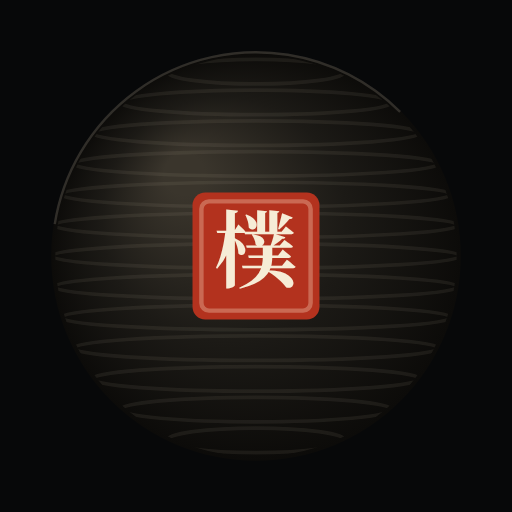
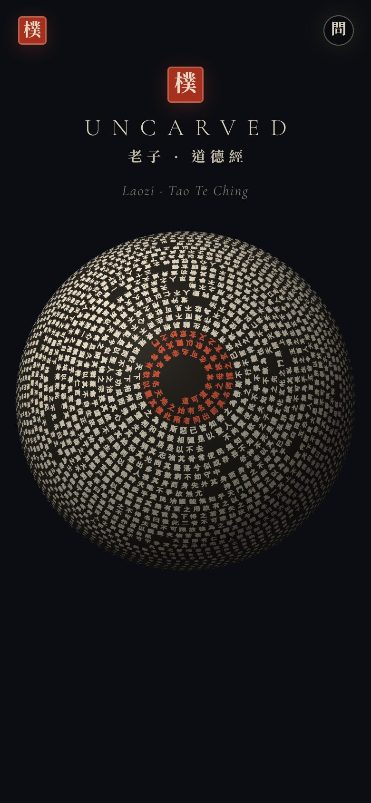
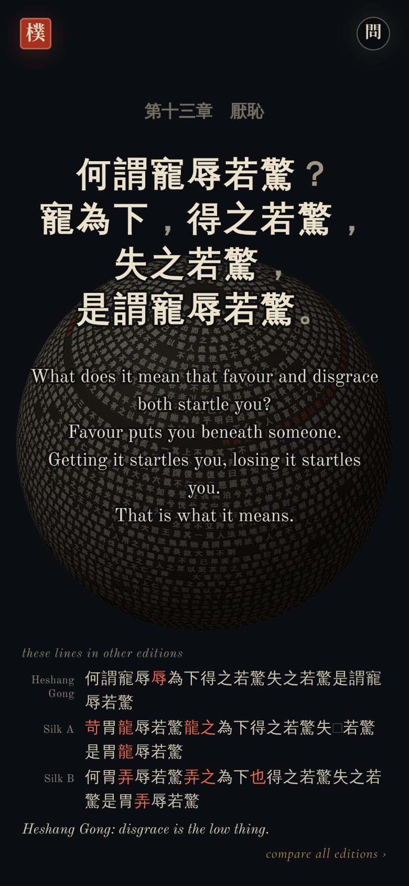
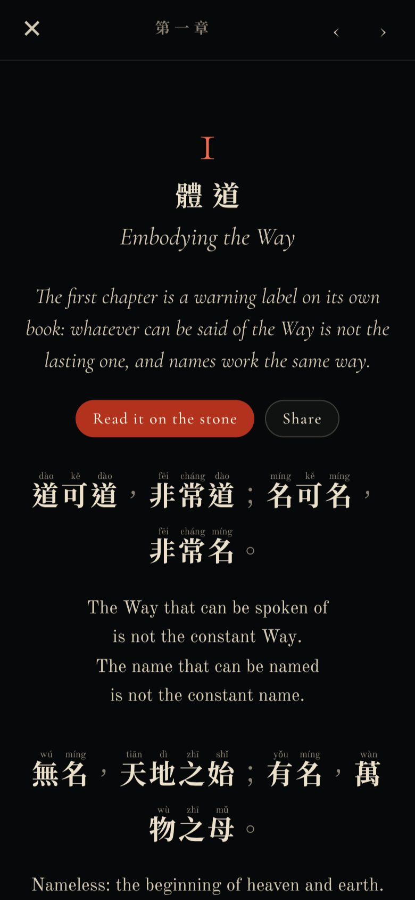

UNCARVED老子 · 道德經The Tao Te Ching as a stone you can turn, hold and ask.
Download for Android
Version 3.1 · 4.9 MB · no internet, no permissions, nothing collected
Open it in your browser
On a computer: open it in Chrome or Edge, then choose “Install” in the address bar.



Installing on Android
- Tap Download for Android.
- Open the downloaded file. If your phone asks, allow your browser to install apps; it asks because the app comes from this page, not the Play Store.
- Open Uncarved. Turn up the sound.
What it is
- All 81 chapters carved as one spiral on a stone globe. Turn it, and each character is plucked in its own Mandarin tone. Let it rest, and the passage rises and is sung, then read in English.
- Touch it and a ripple runs through the text. Hold it and the characters gather round your finger. Shake it, or press 問, and it lands on a passage: an answer to the question you’re holding.
- Wang Bi’s text, the one most of history read, with a new English translation.
- After each passage, the same lines in the oldest editions: Heshang Gong, Fu Yi, and the two silk manuscripts buried in 168 BCE.
- Every chapter opened up: pinyin, the meaning of each character, and a commentary on what it says, how it is built, and what is at stake.
- A card for any passage, to share.
Check the file
SHA-256 of the APK:17968ab7ab5121e7248153957cc4ecdf977c592cbcf8ca0f5b3417db06a48283
Signing certificate SHA-256:f8d4fd914283c3e8ec8d0f8e61bf9bc4dcc74f41405b617faaf2c2af5c5f8645